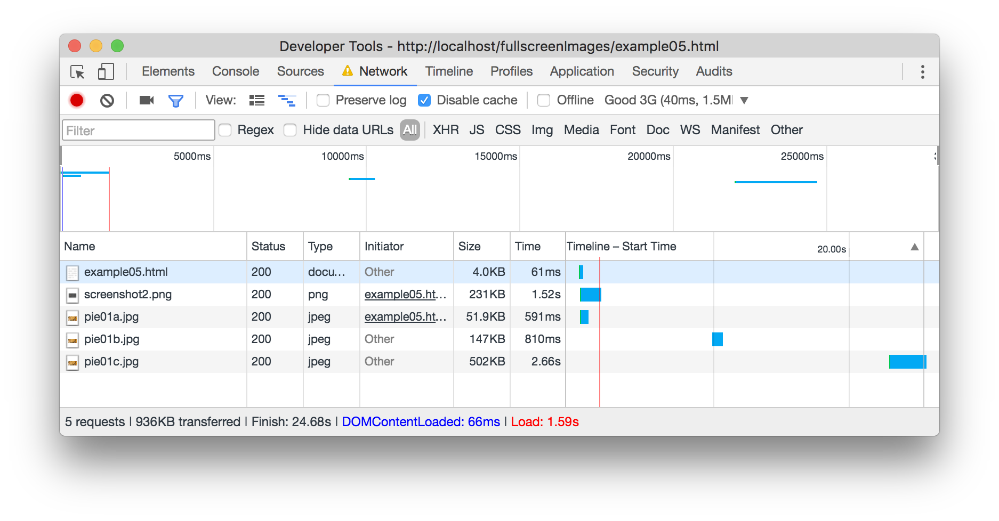

Load Smaller Background Images
On this example, the initial image that loads in the background of the div at the top of the page is pie01a.jpg and it is 420px wide.
You will notice that if you make your browser bigger, at just under 600 pixels you will notice that the quality of the background image is starting to degrade. At 600 pixels wide, the image is replaced with pie01b.jpg, which is larger and loads from the media query.
At 1300 pixels wide, the browser loads the next larger image, pie01c.jpg. This way the browser only loads the size image the user of the website needs and not all the images that are not needed.
The Chrome developer tools (inspector) can you us see how this works on a network. You need to run it through a server though for this to work. You can use the live server VS Code plugin, MAMP/WAMP or put it up on a web server to see this.
If I start with my browser small, like mobile, you will see the small image load, and you can see how long it takes. If I then make my browser wider, without even reloading, when it gets to 600px wide, the larger background image comes in. Then again at 1300 pixels and if you have a large enough monitor, you can see the monster sized image come in at 2000px. This means you are only loading the size image you need, and not wasting bandwidth downloading masive images.
Note: This works for background images in CSS, images that are in your content, like the image of the graph below are a different story. For that, you can explore the srcset attribute or the picture tag.
